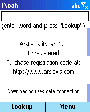
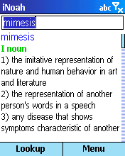

| |
Products | Downloads | Buy | Documentation | News | Support |
|
|
iNoah requires an MS Smartphone (e.g. MPx200, i600, SPV E100 and E200 etc.)
with wireless internet connection. It's not signed so it might not work on
application locked devices.
Please try the FREE TRIAL version first to check compatibility. |
| Download iNoah. You can install inoah_sm_1_0.cab file wirelessly directly on your device or run inoah_sm_1_0_setup.exe setup program on your computer. |
|

At startup iNoah displays About screen.
In order to get a definition of a word, type the word in the text box and press "Lookup". |
|  iNoah will download word definition and display it. If a definition doesn't fit on the screen, it can be scrolled using up/down buttons, |
Main menu options:
|
 You can change the size of the font used to display word definition in order
to better suit your preferences.
You can change the size of the font used to display word definition in order
to better suit your preferences.
|
|
Unregistered version of iNoah limits how many definitions can be viewed.
In order to remove that limit, you need to purchase
registration code (serial number). After purchasing
iNoah, registration code is e-mailed to you. We strongly recommend saving
it in a safe place for future reference.
Use menu item 'Register' to enter registration code. Press 'Later' to postpone registration process. Press 'Register' to verify registration code. Registration code consists of numbers only. |
|
If the registration code is invalid, iNoah will show the following dialog box.
Press 'Yes' to correct the registration code or 'No' to postpone registration process.
If you re-install iNoah, you might need to re-enter registration code, so please keep it for future reference. |
|
To check if there's an updated version of iNoah,
select menu item 'About/Check updates'. This will launch a built-in web browser
with a web page showing if the installed version of iNoah is the latest.
You can also use menu item 'About/ArsLexis home' to visit a version of ArsLexis website optimized for viewing on a Smartphone. On that page you'll find description of our software for Smartphone and links to direct downloads. |
|
We strive to provide great support for our software. To obtain support please visit support page on our website. To provide feedback to our development team, suggest improvements, discuss ideas and exchange tips and tricks with other users, participate in our discussion group. |